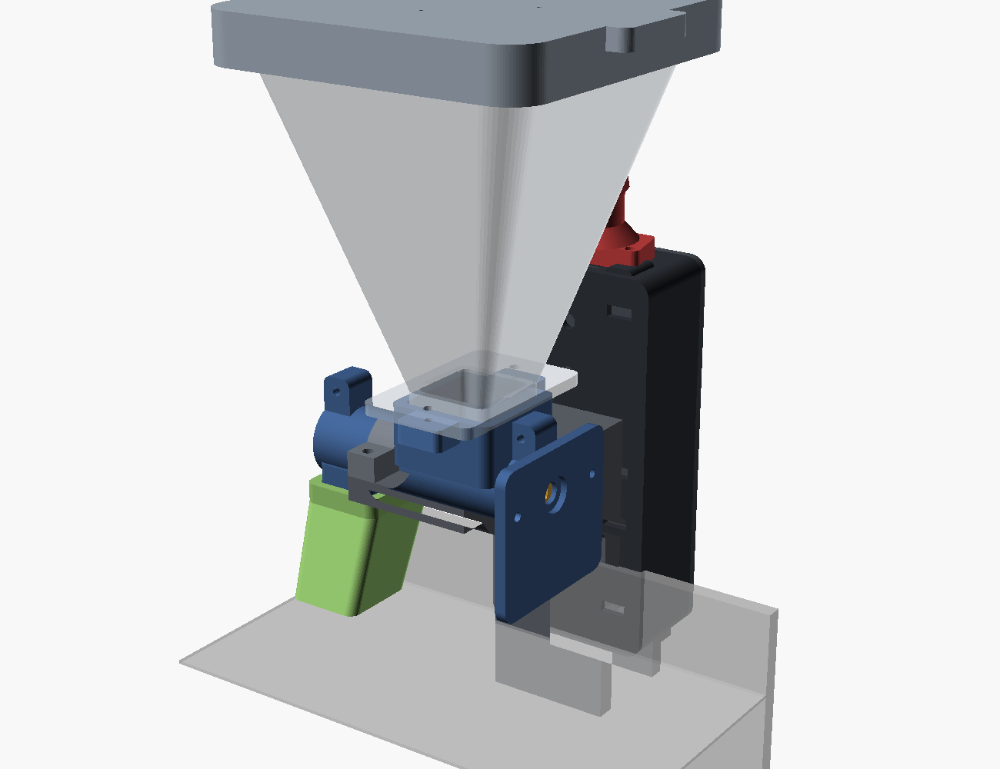
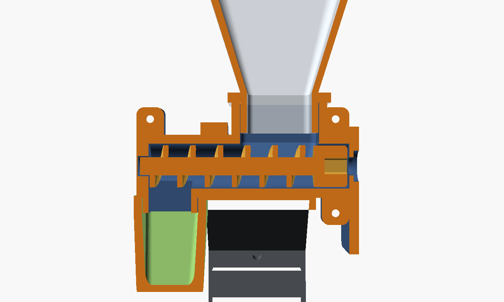
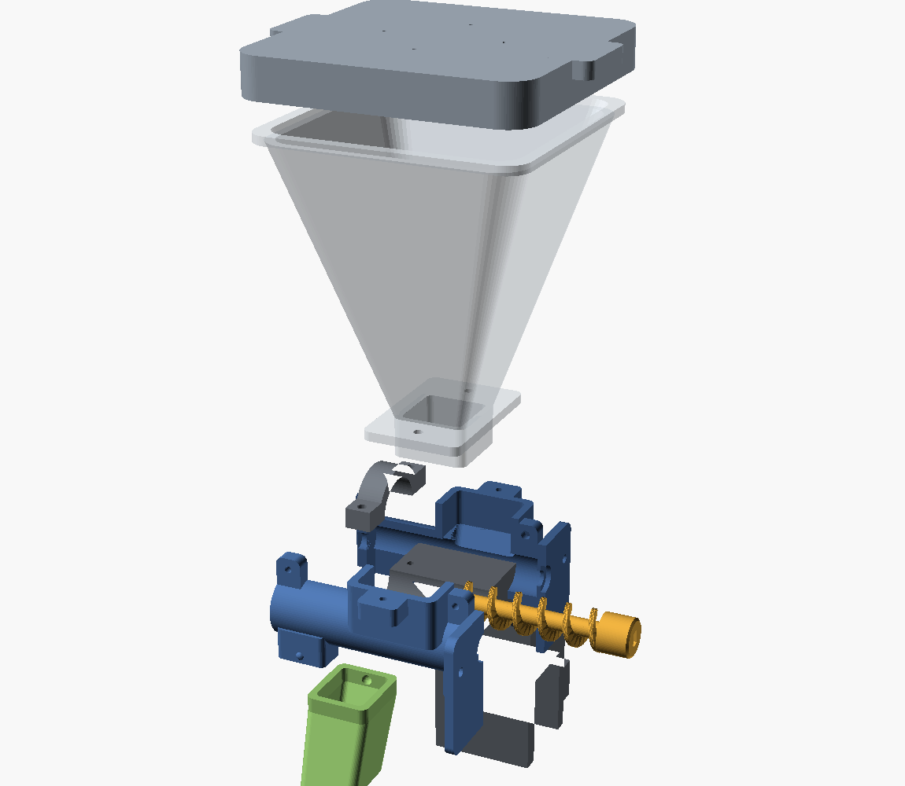
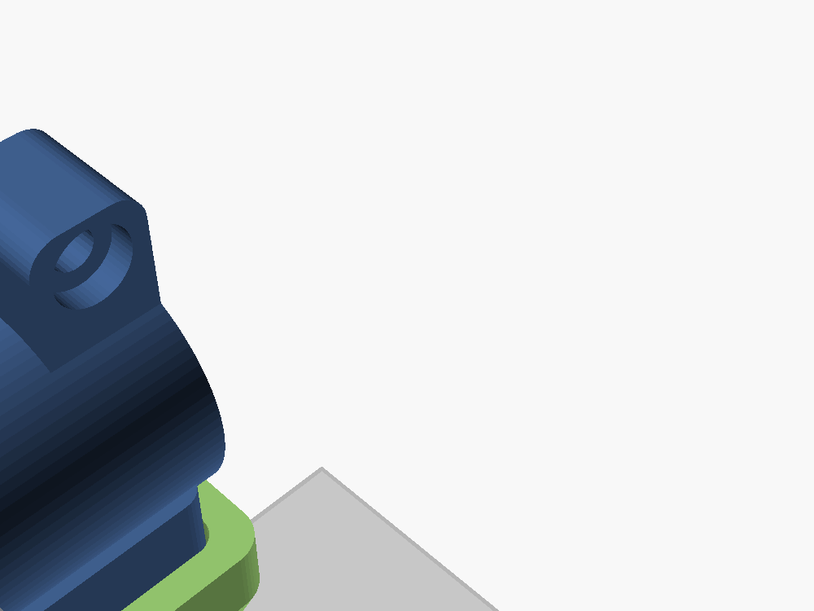

Alimentador de aquário
com ESP32-S3 e câmera
Agenda de horários, acionamento manual de qualquer lugar do mundo e uma câmera para conferir se está tudo bem. Todas as peças saem da impressora 3D e o firmware é um único ESP32-S3.

O que essa máquina faz
Um funil de 300 ml despeja ração numa rosca sem-fim. A rosca gira um ângulo exato e entrega uma dose exata. Um ESP32-S3 controla o horário, expõe uma interface web na sua rede, aceita comandos pelo Telegram e mostra o aquário pela câmera.
| Recurso | Como |
|---|---|
| Agenda | Até 8 horários, com dias da semana e porções por horário |
| Alimentar agora | Interface web, comando no Telegram ou o botão BOOT da placa |
| Câmera | Foto sob demanda e vídeo MJPEG ao vivo. Não tem câmera compatível? Dá para apontar a interface para uma câmera externa (celular velho com IP Webcam, câmera Wi-Fi) |
| Fora de casa | Bot do Telegram — sem abrir porta no roteador |
| Queda de luz | Recupera a refeição perdida quando a energia volta |
| Anti-entupimento | Recua a rosca antes de cada dose; sensor de grãos opcional avisa se nada caiu |
| Travas | Limite de porções por dia, por acionamento e intervalo mínimo |
| Atualização | OTA pela rede depois da primeira gravação |
Por que rosca sem-fim
Existem três mecanismos comuns em alimentadores: tambor rotativo, disco com fatia e rosca sem-fim (auger). A rosca ganha aqui por três motivos:
- Dose proporcional ao ângulo. Meia volta entrega metade. Dá para dosar 0,2 ml com repetibilidade, o que é impossível num tambor.
- Veda umidade. O tubo cheio de ração é uma barreira física entre o ar úmido do aquário e o reservatório.
- Não escorre sozinha. Com o tubo na horizontal, a ração só anda quando a rosca gira.

Os números do projeto
| Grandeza | Valor | De onde vem |
|---|---|---|
| Diâmetro da hélice | 14 mm | núcleo 6 mm → folga radial de 4 mm, passa grão de até 3 mm |
| Passo da hélice | 9 mm | avanço por volta |
| Volume por volta | 0,93 ml | área do canal 125,7 mm² × (passo − aleta) |
| Porção padrão | 0,23 ml | 1/4 de volta (ajustável na interface) |
| Reservatório | ~300 ml | funil de 25,6 → 86 mm em 95 mm de altura |
| Inclinação das paredes | 72° | acima do ângulo de escoamento da ração seca |
auger_od,
auger_core e auger_pitch no cad/common.scad e
reimprima rosca e tubo.Qual motor usar
O projeto suporta dois motores. Muda apenas duas peças impressas (as metades do tubo e a rosca) e uma flag na compilação. Todo o resto é idêntico.
| 28BYJ-48 + ULN2003 | NEMA 17 + A4988/DRV8825 | |
|---|---|---|
| Alimentação | 5 V, a mesma do ESP32 | 12 V + conversor para 5 V |
| Peso | 40 g | 250–280 g pendurados na borda |
| Redução | 1:64 embutida | nenhuma (mas tem torque de sobra) |
| Consumo | ~250 mA | 0,4–1 A, driver esquenta |
| Resolução | 4096 passos/volta | 1600 (1/8 de micropasso) |
| Ajuste do driver | nenhum | limite de corrente no trimpot |
| Custo | ~R$ 20 o par | R$ 0 se você já tem os dois |
Lista de compras
| Item | Qtd | Preço aprox. |
|---|---|---|
| Placa ESP32-S3 com câmera (kit Freenove ESP32-S3-WROOM CAM) | 1 | R$ 90–170 |
| Motor 28BYJ-48 5 V + driver ULN2003 | 1 | R$ 15–30 |
| Motor NEMA 17 (reaproveitado de impressora) | 1 | — |
| Driver A4988, DRV8825 ou TMC2208 | 1 | R$ 10–25 |
| Fonte 5 V / 2 A (ou carregador USB + cabo) | 1 | R$ 25–45 |
| Fonte 12 V / 2 A + conversor step-down para 5 V (MP1584/LM2596) | 1 | R$ 40–60 |
| Capacitor eletrolítico 470–1000 µF (e 100 µF para o VMOT) | 1–2 | R$ 4 |
| Cabo 4 vias / jumpers fêmea-fêmea | ~1 m | R$ 10 |
| Parafusos: M3×8 (3), M3×10 (8), M3×12 (2), M3×16 (2), M4×12 (2), M2×6 (2) | — | R$ 15 |
| Parafusos: M3×8 (3), M3×10 (10, sendo 4 para o motor), M3×12 (2), M3×16 (2), M4×12 (2), M2×6 (2) | — | R$ 15 |
| Parafuso M4×30 + porca M4 (aperto da braçadeira) | 1 | R$ 3 |
| Filamento PETG | ~240 g | R$ 20 |
| Opcional: sensor óptico (LED IR + fototransistor 3 mm, ou TCRT5000) | 1 | R$ 8 |
| Opcional: sachê de sílica gel | 1 | R$ 2 |
Total: R$ 190 a 300, dependendo da placa.
Total: R$ 180 a 290 (o motor você já tem).
O firmware também suporta a XIAO ESP32S3 Sense (menor, câmera embutida) e qualquer ESP32-S3 sem câmera.
Imprimir as peças
stl/motor_28byj/peca_de_teste.stlstl/motor_nema17/peca_de_teste.stl
— 10 minutos, 9 g. Ela tem quatro gabaritos: furos do motor, encaixe do eixo, socket do
funil e amostra do funil. Parafuse o motor de verdade nela. Se estiver apertado, mude
fit = 0.10 em cad/common.scad, rode cad/build.sh
e reimprima só a peça de teste. Isso economiza umas 15 horas de retrabalho.Parâmetros (Creality K1 Max, PETG)
| Parâmetro | Valor |
|---|---|
| Material | PETG (PLA funciona, mas sofre com umidade e sol) |
| Bico / camada | 0,4 mm / 0,2 mm |
| Temperaturas | 240–250 °C / mesa 80 °C |
| Velocidade | 60–120 mm/s (não force PETG a 300) |
| Ventilação | 40–60 % |
| Paredes / preenchimento | 3 (4 no tubo) / 20 % (30 % na rosca) |
| Suporte | nenhuma peça precisa |
Peças
As pastas stl/motor_28byj/ e stl/motor_nema17/ contêm as
quatro peças que dependem do motor. Imprima só a pasta do seu motor.
| Arquivo | Massa | Observação |
|---|---|---|
motor_28byj/rosca.stl | 3 g | a rosca; imprime em pé, cubo na mesa |
motor_nema17/rosca.stl | 4 g | a rosca; cubo mais longo para engolir o eixo do NEMA |
motor_28byj/tubo_metade_a.stl | 10 g | metade do tubo — furos roscados M3 |
motor_28byj/tubo_metade_b.stl | 10 g | metade do tubo — furos passantes com rebaixo |
motor_nema17/tubo_metade_a.stl | 13 g | metade do tubo — furos roscados M3 |
motor_nema17/tubo_metade_b.stl | 13 g | metade do tubo — furos passantes com rebaixo |
funil.stl | 65 g | reservatório ~300 ml, translúcido (dá para ver o nível); 124 mm de altura |
tampa_do_funil.stl | 26 g | tampa do funil |
calha.stl | 6 g | calha de saída |
calha_com_sensor.stl | 6 g | alternativa: com 2 furos de 3,4 mm para o sensor óptico |
bracadeira.stl | 66 g | braçadeira + mastro + berço; imprime em pé, 38 mm |
tampa_do_berco.stl | 2 g | tampa do berço |
manipulo.stl | 6 g | manípulo do aperto |
caixa_eletronica.stl | 31 g | caixa da eletrônica |
tampa_da_caixa.stl | 14 g | tampa da caixa |
suporte_da_camera.stl | 15 g | suporte da câmera (já com o giro que desvia do funil) |
Total ≈ 255 a 270 g. Cabe em duas mesas na K1 Max. Sugestão: mesa 1 =
bracket + hopper + lid; mesa 2 = o resto.
Detalhes que importam
A rosca. A hélice é uma escada helicoidal: cada camada apoia na anterior, então sai sem suporte. Depois de imprimir, passe o dedo e tire a rebarba — rebarba é a causa número 1 de rosca travando no tubo.
As duas metades do tubo. A metade A tem furos de 2,55 mm (o parafuso M3 rosca direto no plástico); a B tem furos passantes de 3,3 mm com rebaixo para a cabeça. Não troque.
Quer mudar alguma medida? Tudo é paramétrico em OpenSCAD. Edite
cad/common.scad e rode cad/build.sh — todos os STLs são
regerados.
Ligações
São 6 fios. Não precisa soldar nada se usar jumpers fêmea-fêmea.
| ULN2003 | ESP32-S3 | Por quê |
|---|---|---|
| IN1 | GPIO 1 | |
| IN2 | GPIO 2 | |
| IN3 | GPIO 41 | |
| IN4 | GPIO 42 | |
| 5 V | +5 V da fonte | o motor puxa até ~500 mA; não tire do 3V3 |
| GND | GND comum | fonte, ESP32 e driver no mesmo GND |
Com NEMA 17 são 3 sinais de controle, 4 jumpers de configuração e potência de 12 V. O esquema abaixo é para DRV8825 — o driver vermelho da Pololu e seus clones.
| Pino do DRV8825 | Ligar em | Observação |
|---|---|---|
| STP (STEP) | GPIO 1 | |
| DIR | GPIO 2 | |
| EN | GPIO 41 | ativo em nível baixo; o firmware solta o motor quando para |
| M0, M1 | 3V3 do ESP32 | M2=0 M1=1 M0=1 → 1/8 de micropasso |
| M2 | GND | idem |
| RST, SLP | 3V3 do ESP32 | os dois; sem isso o driver fica em reset |
| VMOT + GND (de cima) | +12 V da fonte | 100 µF eletrolítico direto nesses dois pinos |
| GND (de baixo) | GND comum | mesmo GND do ESP32 e da fonte |
| 1A + 2A | uma bobina | na sua placa os dois pinos de cada bobina são vizinhos: 2A/1A juntos e 1B/2B juntos |
| 1B + 2B | a outra bobina | vermelho+azul de um lado, preto+verde do outro (confirme com o multímetro) |
| FLT (FAULT) | — | deixe solto |
Vref = corrente ÷ 2 → 0,25 V para 0,5 A (essa é a conta do
DRV8825; no A4988 é corrente × 0,8).
0,4 a 0,6 A é mais que suficiente para a rosca e mantém o driver frio.
Sensor de grãos (opcional, mas vale para viagem)
Confirma que a ração realmente caiu. Sem ele, o alimentador "acha" que alimentou mesmo com a rosca travada ou o funil vazio.
- Imprima a calha na variante
calha_com_sensor.stl: ela tem dois furos de 3,4 mm alinhados, um de cada lado do duto. Os LEDs de 3 mm entram por pressão e tampam o furo. - Alimente com 3,3 V, nunca 5 V — a entrada do ESP32 não é 5 V tolerante.
- Um módulo TCRT5000 pronto (VCC/GND/D0) também serve: aponte para o furo e ligue D0 no GPIO 21.
- Ligue em Ajustes → Sensor de grãos e reinicie o aparelho.
Se o sensor estiver ligado e nada for detectado, o firmware recua a rosca, tenta de novo e — se ainda nada — registra falha no histórico e manda aviso no Telegram.
Montagem na caixa
- Pinos para a placa ESP32-S3 e para o driver, para parafuso auto-atarraxante M2,5.
- Fendas de abraçadeira como plano B: se os furos da sua placa não baterem, prenda com abraçadeira de nylon ou fita dupla face e ignore os pinos.
- Janela do USB-C numa ponta — essa ponta fica para cima na montagem.
- Dois furos de 7,5 mm na outra ponta para os cabos saírem para baixo.
b1_hx / b1_hy em cad/common.scad antes de
imprimir a caixa. O padrão (55 × 20 mm) é para a placa Freenove.Montar

stl/montagem_completa.stl e
stl/montagem_explodida.stl abrem em qualquer visualizador 3D.Parafusos
| Onde | Parafuso | Qtd |
|---|---|---|
| Metades do tubo (orelhas) | M3 × 8 | 3 |
| Motor no prato | M3 × 10 | 2 |
| Motor no prato (rosca no próprio motor) | M3 × 10 | 4 |
| Funil no colar do tubo | M3 × 12 | 2 |
| Tampa do berço na braçadeira | M3 × 16 | 2 |
| Tampa da caixa | M3 × 10 | 4 |
| Caixa no mastro | M4 × 12 | 2 |
| Suporte da câmera na caixa | M3 × 12 | 2 |
| PCB da câmera no suporte | M2 × 6 | 2 |
| Aperto da braçadeira | M4 × 30 + porca M4 | 1 |
Tudo que rosca no plástico rosca direto, sem inserto. Entre devagar e não aperte até o fim da força.
Passo a passo
- Rosca no tubo. Limpe a rebarba da hélice. Encaixe o eixo achatado do 28BYJ no cubo da rosca — deve entrar com pressão firme dos dedos. Enfie o eixo do NEMA 17 no cubo da rosca — ele desliza com 0,35 mm de folga, de propósito. Gire a rosca até um dos dois parafusos M3 radiais cair em cima do achatado do eixo e aperte; é o achatado que pega o torque. Eixo redondo liso? Lime um chanfro onde o parafuso encosta. Deite a rosca na metade B, com a ponta fina na bolsa do fundo, feche com a metade A e aperte os 3 M3 × 8.
- Teste antes de continuar: gire o eixo com a mão. A rosca tem que girar livre. Se travar, afrouxe, alinhe e aperte de novo — ou lime a hélice.
- Motor. Parafuse no prato com 2 M3 × 10, com o corpo do motor para baixo. O ressalto do eixo entra no rebaixo do prato — é isso que garante o alinhamento. Parafuse com 4 M3 × 10 no quadrado de 31 mm. Os parafusos entram por dentro da torre e roscam no próprio motor; use chave allen com ponta esférica. O ressalto de 22 mm do motor entra no rebaixo do prato.
- Funil. Encaixe o spigot no socket do tubo e parafuse os 2 M3 × 10 do flange nas orelhas do colar. Esses dois parafusos também prendem as metades do tubo na região do colar. Jogue um sachê de sílica gel dentro antes da ração.
- Calha. Empurre por baixo no boss do tubo até as duas covinhas estalarem. Sai com um puxão firme, para limpeza. A boca inclinada aponta para dentro do aquário.
- Braçadeira. Porca M4 no alojamento sextavado, parafuso M4 × 30, manípulo encaixado na cabeça. Deite o tubo no berço e feche com a tampa + 2 M3 × 16. Posicione o berço entre x = 11 e 49 mm do tubo (entre a orelha da frente e a calha). Com NEMA 17 o tubo é 13 mm mais longo: posicione o berço entre x = 24 e 62 mm.
- Eletrônica e câmera. Placas na caixa, caixa no mastro (USB para cima), PCB da
câmera no
cam_podcom 2 M2 × 6. Cabo flat da câmera com cuidado: levante a aba escura, insira, abaixe a aba.
mast_h em cad/bracket.scad e reimprima só a braçadeira.A mira da câmera
O suporte tem duas inclinações: 45° para baixo e 45° de giro na horizontal. O giro existe porque, olhando reto, a câmera ficaria de cara com a parede do funil.

Imagem de cabeça para baixo ou espelhada? Corrija em Ajustes → Câmera, sem
reimprimir nada. Quer outro ângulo? cam_tilt / cam_yaw em
cad/cam_pod.scad. O pod é simétrico: montado virado 180°, olha para o outro
lado do aquário.
Gravar e configurar
Com PlatformIO (recomendado)
Instale o VS Code + extensão
PlatformIO IDE, abra a pasta firmware/ e clique em Upload. Ou por
linha de comando:
# instalar
pip install --user platformio
# gravar
cd firmware
pio run -e freenove_s3_cam -t uploadpio run -e freenove_s3_cam_nema17 -t upload
pio device monitor| Ambiente | Placa / motor |
|---|---|
freenove_s3_cam | Freenove ESP32-S3-WROOM CAM + 28BYJ-48 |
freenove_s3_cam_nema17 | a mesma placa + NEMA 17 (STEP/DIR) |
xiao_s3_sense | Seeed XIAO ESP32S3 Sense + 28BYJ-48 |
xiao_s3_sense_nema17 | XIAO + NEMA 17 |
s3_sem_camera | ESP32-S3 genérico, sem câmera |
Sem instalar nada (binário pronto)
A pasta firmware/bin/ tem os binários já compilados:
pip install esptool
cd firmware/bin/freenove_s3_cam
esptool.py --chip esp32s3 --port COM5 --baud 921600 write_flash -z \
0x0 bootloader.bin 0x8000 partitions.bin 0xe000 boot_app0.bin 0x10000 firmware.binPrimeiro boot
- Não há Wi-Fi salvo, então o aparelho sobe em modo configuração: procure a
rede
AquaFeeder-XXXX, senhaaquafeeder. - Abra http://192.168.4.1.
- Ajustes → Rede e sistema: preencha o seu Wi-Fi, defina uma senha para a interface e salve. O aparelho reinicia e entra na sua rede.
- Depois disso acesse por http://aquafeeder.local (ou pelo IP que aparece no monitor serial).
Vale reservar o IP no roteador (DHCP estático) — assim o endereço nunca muda.
Atualizar depois (OTA)
pio run -e freenove_s3_cam -t upload --upload-port aquafeeder.localA senha do OTA é a mesma senha da interface.
Como a agenda decide alimentar
A cada 15 s o firmware avalia cada horário ativo. Dispara se: já passou da hora E a última alimentação foi antes dessa hora E não passou da janela de recuperação. Consequências práticas, todas desejáveis:
| Situação | Resultado |
|---|---|
| Faltou luz às 08:00, voltou 08:40 | alimenta ao ligar (dentro da janela de 90 min) |
| Faltou luz às 08:00, voltou 14:00 | não alimenta — ficou fora da janela |
| Você alimentou na mão às 07:50 | o horário das 08:00 é pulado |
| Reset no meio do dia | não repete refeições já feitas |
O contador do dia e a hora da última refeição ficam na memória permanente (NVS), então sobrevivem à falta de energia.
Acertar a dose
O firmware não sabe o que é "uma porção" para o seu peixe. Isso se resolve em 10 minutos e é o passo que mais influencia o resultado final.
Regra prática: a quantidade que os peixes limpam em 2 a 3 minutos, sem sobrar nada no fundo. Para a maioria dos aquários domésticos (10 a 60 L, peixes pequenos) isso dá entre 0,2 e 0,6 ml por refeição — bem menos do que a intuição sugere.
Calculadora de dose
| Objetivo | Passos (28BYJ) | Passos (NEMA 1/8) | Dose aprox. |
|---|---|---|---|
| bem pouco | 512 | 200 | ~0,12 ml |
| padrão | 1024 | 400 | ~0,23 ml |
| médio | 2048 | 800 | ~0,46 ml |
| bastante | 4096 | 1600 | ~0,93 ml |
Procedimento
- Ponha ração no funil (pelo menos 1/3, para o peso ajudar a descer).
- Encha a rosca: Agora → Manutenção → Avançar umas 3 vezes. Recolha essa ração num potinho, não jogue no aquário.
- Ponha um papel embaixo da calha, clique em 1 porção e veja quanto caiu.
- Ajuste Ajustes → Dosagem → Passos por porção.
- Repita 5 vezes e veja se a dose é repetível. Variação de ±20 % é normal com granulado; mais que isso indica ração grande demais ou hélice com rebarba.
Depois de calibrar, ajuste as travas
- Máx. porções/dia — o total real que você usa + 2 de margem. É o que impede que uma falha ou um comando repetido entupam o aquário de comida.
- Máx. por vez — 2 ou 3 basta.
- Intervalo mínimo — 45 s evita clique duplo acidental.
- Janela de recuperação — 90 min. Melhor um jejum que uma dose fora de hora.
Usar de fora de casa
A interface web só existe dentro da sua rede. Para acionar de outro lugar, três caminhos em ordem de recomendação:
1. Telegram (mais simples e mais seguro)
Não precisa abrir nada no roteador: é o alimentador que sai para conversar com o Telegram.
- No Telegram, fale com @BotFather →
/newbot. - Ele devolve um token. Esse token é a chave da sua casa — não compartilhe.
- Cole em Ajustes → Telegram → Token do bot e salve.
- Mande qualquer mensagem para o seu bot. Ele responde com o seu chat id.
- Cole esse número em Chat ID autorizado e salve.
Só esse chat consegue dar comandos; qualquer outra pessoa que encontre o bot é ignorada.
| Comando | O que faz |
|---|---|
/alimentar | 1 porção |
/alimentar 2 | 2 porções |
/foto | tira e envia uma foto do aquário |
/status | porções do dia, última refeição, sinal do Wi-Fi |
/agenda | lista os horários programados |
Com Avisar a cada alimentação ligado você recebe mensagem a cada refeição — inclusive as da agenda — e alerta se o sensor de grãos não detectar ração.
setInsecure()) para economizar memória — é o que praticamente
toda biblioteca de bot para ESP32 faz. Risco real baixo, mas está dito.2. VPN / Tailscale
Se quer o vídeo ao vivo e a interface inteira de fora, instale Tailscale ou WireGuard num computador que fique ligado em casa. Muitos roteadores modernos já trazem servidor VPN embutido.
3. Porta aberta no roteador — não faça
Encaminhar a porta 80 para a internet expõe um dispositivo caseiro a varredura constante. Se ainda assim quiser: senha forte na interface, porta externa alta e aleatória, nunca exponha a porta 81 (vídeo) e prefira um proxy reverso com HTTPS.
A API HTTP é aberta dentro da rede: n8n, Home Assistant, cron, script. Um detalhe útil:
/api/status devolve fedToday, então
você pode montar um alerta externo do tipo "se às 21h ainda não alimentou hoje, me
avise".
Checklist antes de viajar
Alimentador automático é o tipo de coisa que só falha quando você não está lá. Este checklist existe para isso. Ele fica salvo no seu navegador.
Duas semanas antes
Uma semana antes
Um dia antes
Plano B (importante)
Nenhum equipamento caseiro é 100 % confiável. Combine com uma segunda camada:
- Uma pessoa de confiança com a chave — e avise que existe um alimentador automático, para ela não alimentar em dobro. Deixe ração porcionada em saquinhos, um por dia, para usar só se você pedir.
- Jejum é seguro. Se a viagem é de até uma semana, o risco de morrer de fome é muito menor que o de morrer por excesso de comida ou pico de amônia.
- Viagem longa (mais de 3 semanas)? A manutenção da água é um problema maior que a comida — troca parcial é insubstituível.
Quando dá problema
A rosca trava ou range
Sai muito mais ração que o programado
radial_clear = 0.3 em common.scad.
Sai pouco ou nada, mas o motor gira
ANTIJAM_STEPS em
firmware/include/config.h.
Motor esquenta
Motor vibra mas não gira
Resets aleatórios ao alimentar
A câmera não inicializa (esp_camera_init 0x105)
firmware/include/camera_pins.h contra o exemplo oficial do fabricante da
sua placa. Sem PSRAM a câmera cai para 640×480 automaticamente.
Não acho o aquafeeder.local
Vídeo travando / interface lenta com o vídeo ligado
Alimentou na hora errada
<-03>3
para o Brasil. Se o relógio mostra "sem hora", o NTP não sincronizou.
Esqueci a senha da interface
pio run -e freenove_s3_cam -t erase && pio run -e freenove_s3_cam -t uploadLog serial — o que procurar
[cfg] carregado (412 bytes)
[feeder] pronto (28BYJ-48/ULN2003). 1024 passos/porcao, 1300 us/passo, hoje=2
[cam] ok (psram=1, tam=2, q=12)
[wifi] ok ip=192.168.0.42 rssi=-58 dBm
[web] http://aquafeeder.local (porta 80)
[tg] pronto, offset inicial 123456789
[agenda] slot 0 disparado (08:00)
[feeder] 2 porcao(oes) via agenda, graos=14, ok=1